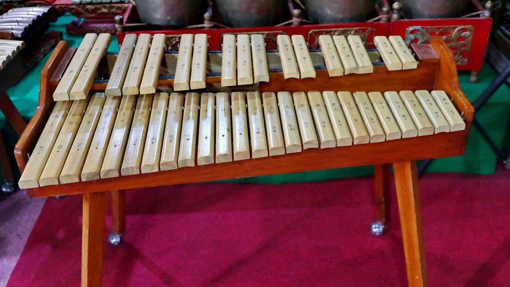
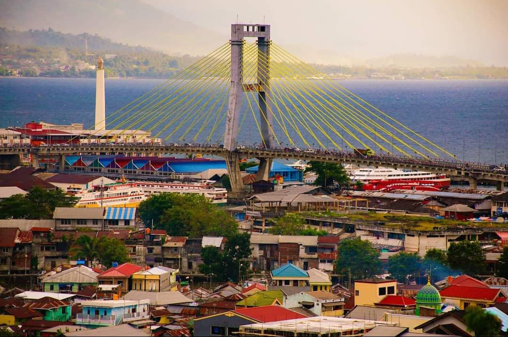
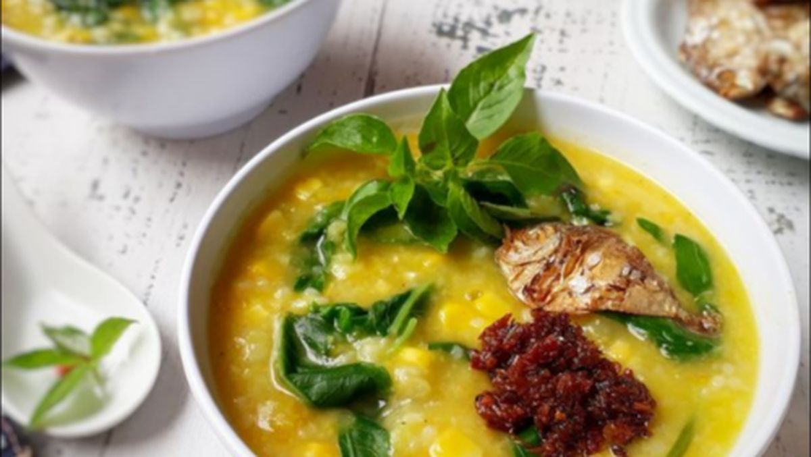

Alat Musik
Kolintang
Alat musik pukul tradisional khas Minahasa yang terbuat dari bilah-bilah kayu, menghasilkan nada melodis yang indah dan sering ditampilkan dalam upacara adat.

Sulawesi Utara, yang dikenal sebagai Bumi Nyiur Melambai, menyimpan kekayaan budaya yang luar biasa. Provinsi ini dihuni oleh berbagai suku bangsa yang hidup berdampingan dalam keharmonisan, menciptakan keragaman budaya yang unik dan memukau.
Website ini hadir sebagai wadah digital untuk memperkenalkan dan melestarikan warisan budaya Sulawesi Utara, mulai dari alat musik tradisional, pakaian adat, kuliner khas, hingga arsitektur rumah adat.
Pelajari Lebih LanjutTelusuri kekayaan budaya Sulawesi Utara melalui empat kategori utama
Alat musik tradisional khas Sulawesi Utara yang merdu dan unik
Pakaian tradisional yang elegan penuh makna filosofis
Kuliner tradisional dengan cita rasa yang kaya dan menggugah selera
Arsitektur tradisional yang sarat nilai sejarah dan budaya
Beberapa warisan budaya paling ikonik dari Sulawesi Utara

Alat musik pukul tradisional khas Minahasa yang terbuat dari bilah-bilah kayu, menghasilkan nada melodis yang indah dan sering ditampilkan dalam upacara adat.

Bubur khas Manado yang terbuat dari beragam sayuran seperti kangkung, bayam, labu kuning, dan jagung. Disajikan dengan sambal dabu-dabu dan ikan asin.

Rumah panggung tradisional Minahasa yang dibangun di atas tiang-tiang kayu tinggi, melambangkan keharmonisan manusia dengan alam.
Cuplikan keindahan budaya Sulawesi Utara dalam bingkai visual


